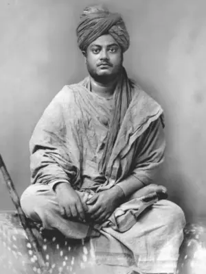

Swami Vivekananda
Swami Vivekananda, known in his pre-monastic life as Narendra Nath Datta, was born in an affluent family in Kolkata on 12 January 1863. His father was a successful attorney and his mother was endowed with deep devotion and strong character.
With Sri Ramakrishna
At the threshold of youth, Narendra had to pass through a period of spiritual crisis when doubts about the existence of God assailed him. One day in November 1881, he went to meet Sri Ramakrishna at the Kali Temple in Dakshineshwar. He straightaway asked the Master:
"Sir, have you seen God?" Without a moment's hesitation, Sri Ramakrishna replied: "Yes, I have. I see Him as clearly as I see you, only in a much intenser sense."
Apart from removing doubts, Sri Ramakrishna won him over through his pure, unselfish love. Thus began a guru-disciple relationship which is unique in the history of spiritual masters.
Beginnings of the Monastic Brotherhood
Sri Ramakrishna instilled in his young men the spirit of renunciation and brotherly love. One day he distributed ochre robes among them and sent them out to beg for food - laying the foundation for a new monastic order. After the Master's passing on 16 August 1886, fifteen young disciples formed a brotherhood at Baranagar under Narendra's leadership, taking formal vows of sannyasa in 1887.
Discovery of Real India
During his travels all over India, Swami Vivekananda was deeply moved to see the appalling poverty and backwardness of the masses. He was the first religious leader in India to understand and openly declare that the real cause of India's downfall was the neglect of the masses.
He grasped the crux of the problem: owing to centuries of oppression, the downtrodden masses had lost faith in their capacity to improve their lot. They needed two kinds of knowledge - secular knowledge to improve their economic condition, and spiritual knowledge to infuse faith in themselves.
The Parliament of Religions
His speeches at the World's Parliament of Religions held in September 1893 in Chicago made him famous as an 'orator by divine right' and as a 'Messenger of Indian wisdom to the Western world.' After the Parliament, Swamiji spent nearly three and a half years spreading Vedanta in the eastern parts of USA and in London.
Awakening His Countrymen
He returned to India in January 1897. Through inspiring and profoundly significant lectures across India, he attempted to rouse the religious consciousness of the people, create pride in their cultural heritage, bring about unification of Hinduism, and focus attention on the plight of the downtrodden masses.
Founding of Ramakrishna Mission
On 1 May 1897, he founded the Ramakrishna Mission - a unique type of organization in which monks and lay people would jointly undertake propagation of Practical Vedanta, and various forms of social service such as running hospitals, schools, colleges, hostels, rural development centres, and conducting massive relief and rehabilitation work.
Belur Math
In early 1898, Swamiji acquired a big plot of land on the western bank of the Ganga at Belur. Here he established a new, universal pattern of monastic life - one which adapts ancient monastic ideals to modern conditions, gives equal importance to personal illumination and social service, and is open to all men without any distinction of religion, race or caste.
Last Days
Incessant work told upon Swamiji's health. Before his Mahasamadhi on the night of 4 July 1902, he had written to a Western follower:
"It may be that I shall find it good to get outside my body, to cast it off like a worn out garment. But I shall not cease to work. I shall inspire men everywhere until the whole world shall know that it is one with God."
Message of Swami Vivekananda
- My ideal, indeed, can be put into a few words: to preach unto mankind their divinity, and how to make it manifest in every movement of life.
- We want that education by which character is formed, strength of mind is increased, the intellect is expanded, and by which one can stand on one's own feet.
- Religion is realization; not talk, not doctrine, nor theories, however beautiful they may be. It is being and becoming, not hearing or acknowledging.